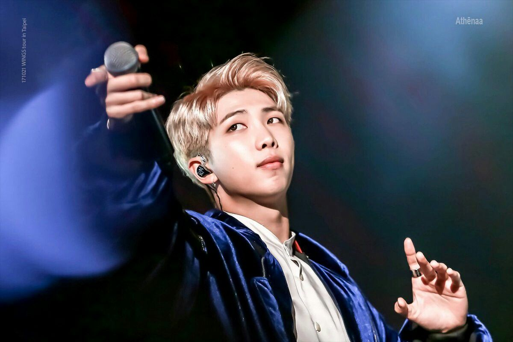

kim namjoon
a man of art
timeline of kim namjoon's life
- 1994 - born in Seoul, South Korea
- 2009 - he auditions for Big Deal Records, passing the first round along but failing the second round as he forgot all his lyrics.
- 2010 - namjoon joins big hit entertainment shortly after at age 16. He was encouraged to audition by rapper Sleepy.
- 2013 - on june 13 he makes his debut with BTS.
- 2014 - august 5 big hit entertainment releases a trailer for BTS' first studio album dark & wild which was released on the 20th.
- 2015 - he releases his first mixtape titled rm
- 2018 - he releases his second mixtape entitled mono that cctober, which he referred to as a "playlist"
- 2020 - in january along with fellow bts members j-hope, namjoon is promoted from associate to a full member of the korea music copyright association
"Happiness is not something that you have to achieve. You can still feel happy during the process of achieving something”
-kim namjoon